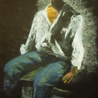
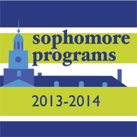

Hey there! My name is Talia Swartz. I'm a fourth-year Computer Science major at Northeastern University in Boston, MA. I love front-end web development and bunnies. I also love drawing stuff, primarily people and my shoes. The photo you see above is of me hiking in Israel. It's the only cool photo of myself in existence.

I can code, draw, and name (almost) every world capitol.
About
I was born to a spunky flamenco dancer and her stoic but tender-hearted bullfighter husband in Barcelona.
We lived above a convent and at night my father played guitar for us while my mother danced under the stars.
Pranked you! I was born in Palo Alto, CA.
When I was 6 we moved to Baltimore, MD.
Yes, The Wire was filmed there. And yes, I have seen The Wire.
Have you seen The Wire? If not, you should go watch it now. No, seriously, go. I'll wait here.
I grew up loving art and thought for a long time that I would pursue it in college and as a career.
After I enrolled at Northeastern University, I very suddenly changed my mind
and switched my major from Digital Art to Computer Science.
I always had an interest in coding and I decided that this was my chance to learn more about it.
BEST. DECISION. EVER.
Northeastern is known for its five-year "co-op" program in which students complete two or three internships
in fields related to their majors.
As a Computer Science major I have completed two totally awesome software-engineering co-ops and am currently
on my third and final (which is also totally awesome).
My first one was at Intuit in sunny San Diego, CA.
I worked on Turbo Tax Online on the front-end and the Mexican food there is unbelievable.
It was my first programming job ever so it was pretty cool to apply what I had learned in class in real life.
I learned a ton about coding for real users. And skipping out on the harsh Boston winter didn't hurt either.
My second co-op was at PowerAdvocate in Boston.
I worked as a full-stack developer on several different products.
It was completely awesome to work with all parts of the application, including front-end, back-end, and testing.
I was also part of a Scrum team, which was a great way to learn about collaborating with other engineers.
I am currently working at HubSpot in Cambridge, MA as a front-end developer on the Content Optimization System.
I've been building features and pushing code everyday and I love every second of it.
Being part of such a fast-growing company and helping it grow a little bit everyday feels amazing.
The open and laid-back culture here is incredible and yes, I also love the free candy.
But who doesn't? Weirdos. That's who.
Code
The front-end is where I'm at.
I think my love of art and design has something to do with that.
Pretty much all of my professional experience is with web applications but I have
also made a few local desktop apps here and there.
I am loving CoffeeScript at the moment and I've also done a lot of work in
Java, Python, C, SQL, HTML, CSS, Sass, Jade, Handlebars, JavaScript, Backbone.js, Flex, Spring, and ExtJS.
I also participted in the 2014 HackBeanpot.
My dear friend Rose and I created a web app called Split that lets you split (see where the name comes from??)
gas money on road trips. Just put in your starting point and destination and how many people the gas money
will be split between.
It will calculate the total gas cost based on the distance you're traveling and
the national average gas price AND THEN it will send Venmo charges to each person!
We won Best Use of APIs. Yay!
Check it out along with other stuff I've made here
Art
I'm also pursuing a minor in Art and Design. I love making art, whether it's with digital or traditional media. I've also done some graphic design work on the side for my synagogue, Johns Hopkins University, and my family and friends. Posters, flyers, brochures, logos, you name it. Take a look at some of my work below! (Click on the thumbnails to see the full images)




Resume
EDUCATION
Northeastern University, Boston, MA
September 2010-present
College of Computer and Information Science
Candidate for a Bachelor of Arts in Computer Science, 2015
Cumulative GPA: 3.78/4.00
Pikesville High School, Pikesville, MD
September 2006-May 2010
Cumulative GPA: 3.90/4.00
TECHNICAL SKILLS
Software: Sublime, Eclipse, Adobe Illustrator, Photoshop, Flash, Premiere, InDesign, Maya
Coding: Coffeescript, BackBone.js, Java, C, Python, SQL, ExtJS, HTML, CSS, JavaScript, Sass, Jade, Racket, ActionScript, Adobe Flex, Spring Framework, TestNG, Mockito
EXPERIENCE
HubSpot
Cambridge, MA
January-June 2014
Software Engineering Co-op
Developed features and fixed bugs on the front-end of the Content Optimization System product; Helped create a new beta version of a UI; Primarily used CoffeeScript and BackBone.js
PowerAdvocate
Boston, MA
January-June 2013
Software Engineering Co-op
Developed web applications on front-end with ExtJs and back-end with the Spring Framework and Java; Wrote tests using the TestNG framework and Mockito; Participated in Scrum team
Intuit
San Diego, CA
January-June 2012
Software Engineering Co-op
Fixed bugs in Free File Fillable Forms (online tax preparation service); developed web application in Spring Framework that assists Quality Assurance in maintaining Free File Fillable Forms website
Northeastern U. - College of Computer and Information Science
Boston, MA
Sept.-Dec. 2011, Sept.-Dec. 2012
Fundamentals of Computer Science Tutor
Co-taught weekly labs for students in the Fundamentals of Computer Science course; held weekly office hours to assist students in learning basic programming concepts
Contact
Do you need some coding or graphic design work done?
Or do you just wanna be best friends?
Feel free to connect with me on GitHub, LinkedIn, or directly at tswartz92@gmail.com using the links below!